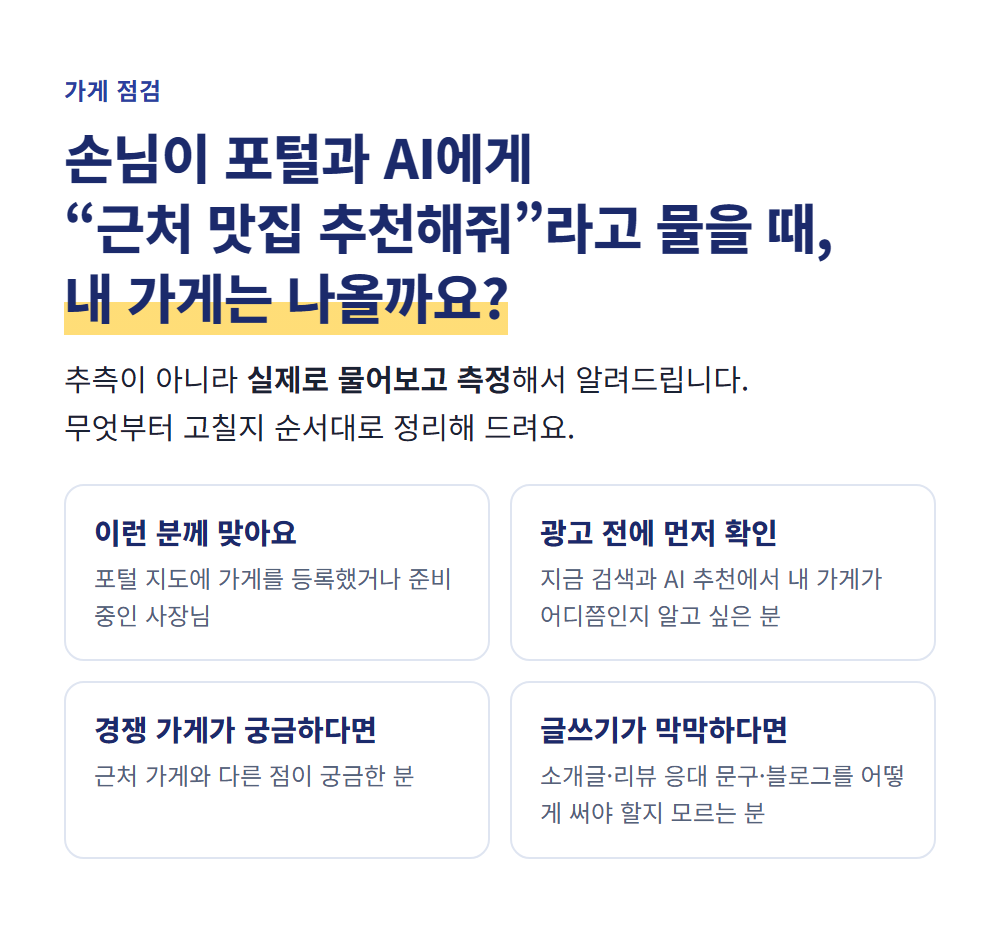
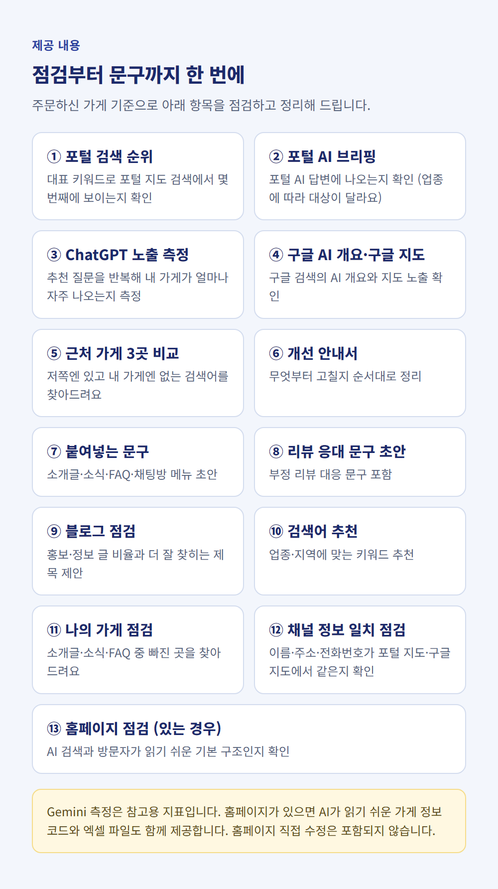
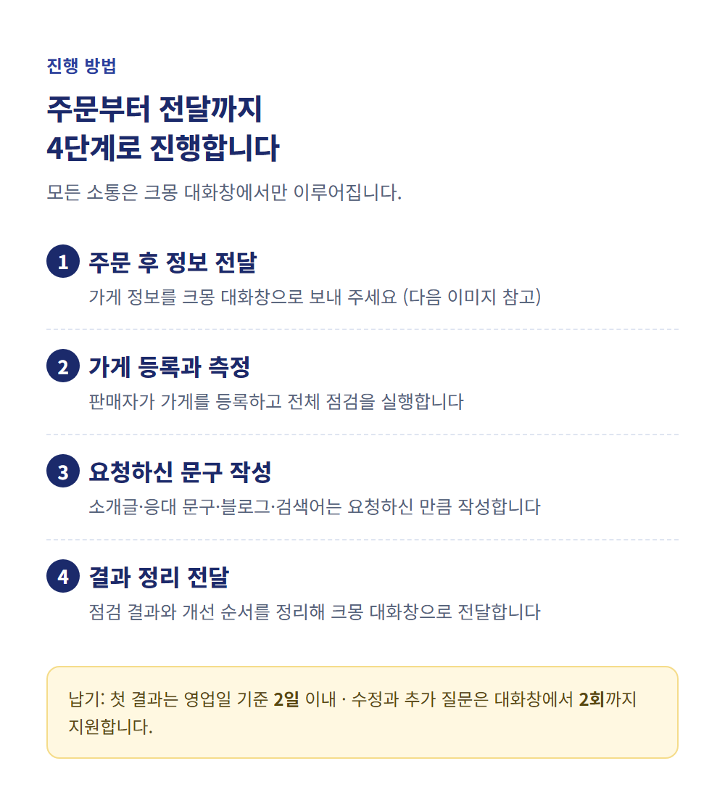
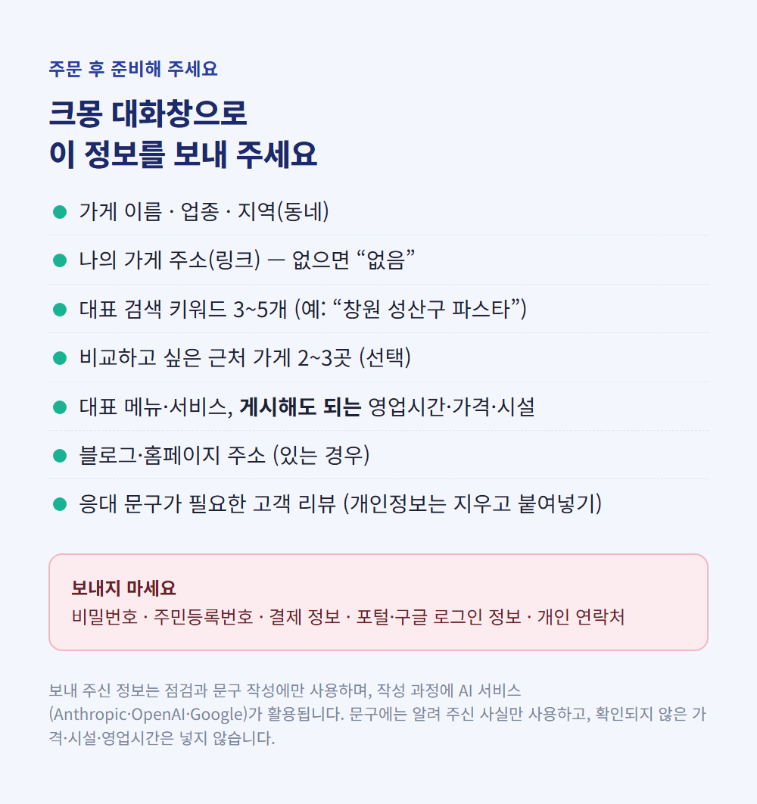
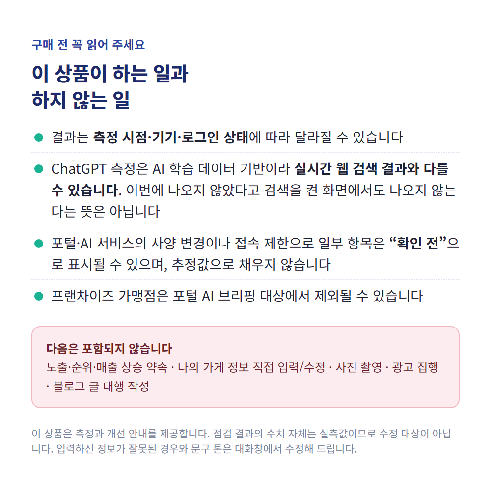

1. 서비스 제목 (복사해서 제목란에 입력)
나의 가게·블로그·경쟁사·구글·제미나이·GPT 진단
다른 후보 (모두 30자 이내): ① 나의 가게·블로그·경쟁사·구글·제미나이·GPT 점검 (28자) ② 나의 가게·블로그·경쟁사·구글·GPT 노출 진단 (26자, 제미나이 제외)

내 가게, AI 검색에 나올까요?
손님이 포털이나 AI에게 “근처 맛집(카페·미용실…) 추천해줘”라고 물을 때 내 가게가 실제로 나오는지 측정하고, 무엇부터 고칠지 순서대로 알려드립니다.
추측이 아니라 실제로 물어보고 측정한 결과를 정리해 드립니다.
이런 분께 맞습니다
- 포털 지도에 가게를 등록했거나 준비 중인 소상공인 사장님
- 광고 전에 지금 검색·AI 추천에서 내 가게가 어디쯤인지 알고 싶은 분
- 근처 경쟁 가게와 무엇이 다른지 궁금한 분
- 소개글·리뷰 응대 문구·블로그를 어떻게 써야 할지 막막한 분
이 상품이 하는 일
AI 검색 노출 점검의 가게 점검 기능 전체를 판매자가 직접 진행해, 사장님 가게 기준으로 점검하고 결과를 전달해 드립니다. 별도 준비 없이 대화창으로 정보만 보내 주시면 됩니다.
주문 시점의 가게 상태를 1회 점검해 결과를 전달하는 단발성 상품입니다. 정기 점검이나 이후 변화 추적은 포함되지 않습니다.

제공 내용
- 포털 검색 순위 — 대표 키워드로 포털 지도 검색에서 몇 번째에 보이는지 확인
- 포털 AI 브리핑 — 포털 AI 답변에 내 가게가 나오는지 확인 (업종에 따라 대상이 달라요)
- ChatGPT 노출 측정 — “○○동 맛집 추천” 같은 질문을 반복해 내 가게가 얼마나 자주 나오는지 측정
- 구글 AI 개요·구글 지도 — 구글 검색의 AI 개요와 지도에 나오는지 확인
- Gemini 참고 측정 — 같은 방식의 참고용 지표
- 내 가게 성장 단계 — 시작 전 · 보강 단계 · 개선 중 · 양호 중 어디쯤인지 안내
- 근처 가게 3곳 비교 — “저쪽엔 있고 내 가게엔 없는 검색어”를 찾아 정리
- 개선 안내서 — 무엇부터 고칠지 순서대로 정리 (3건 이내)
- 붙여넣는 문구 — 나의 가게 소개글·소식·FAQ·채팅방 메뉴 초안 (합산 10건 이내)
- 리뷰 응대 문구 초안 — 50건 이내, 부정 리뷰 대응 문구 포함
- 블로그 점검 — 홍보·정보 글 비율을 보고 더 잘 찾히는 제목·소재 제안 (5회 이내, 블로그 주소 필요)
- 검색어 추천 — 업종·지역에 맞는 검색어 추천 (5회 이내)
- 나의 가게 점검 — 소개글·소식·FAQ 중 빠진 곳을 찾아 안내
- 채널 정보 일치 점검 — 이름·주소·전화번호가 포털 지도·구글 지도에서 같은지 확인
- 홈페이지 점검 — 홈페이지가 있는 경우 AI 검색과 방문자가 읽기 쉬운 기본 구조인지 확인
- 가게 정보 코드와 엑셀 파일 — 홈페이지가 있는 경우 AI가 읽기 쉬운 가게 정보 코드와 점검 결과 엑셀 제공
※ 소개글·응대 문구·블로그·검색어 항목은 사장님이 대화창으로 요청하신 만큼, 위 한도 안에서 작성합니다.
※ 문구에는 알려 주신 사실만 사용합니다. 가격·영업시간·시설·수상 등 확인되지 않은 내용은 넣지 않거나 “직접 확인 후 기재”로 남깁니다.

진행 방법 (모든 소통은 크몽 대화창)
- 주문 후 아래 정보를 크몽 대화창으로 보내 주세요.
- 판매자가 가게를 등록하고 전체 점검을 실행합니다.
- 요청하신 문구를 작성합니다.
- 점검 결과와 개선 순서를 정리해 크몽 대화창으로 전달합니다. 《결과 전달 형태 확정: 예) PDF 보고서 / 대화창 정리글》
첫 결과 전달은 영업일 기준 2일 이내이며, 수정과 추가 질문은 대화창에서 2회까지 지원합니다.

주문 후 대화창으로 보내 주실 정보
- 가게 이름 / 업종 / 지역(동네)
- 나의 가게 주소(링크) — 없으면 “없음”
- 대표 검색 키워드 3~5개 (예: “창원 성산구 파스타”)
- 비교하고 싶은 근처 가게 2~3곳 (선택)
- 대표 메뉴·서비스, 게시해도 되는 영업시간·가격·시설
- 블로그·홈페이지 주소 (있는 경우)
- 응대 문구가 필요한 고객 리뷰 (이름·전화번호 등 개인정보는 지우고 붙여넣기)
보내지 마세요: 비밀번호, 주민등록번호, 결제 정보, 포털·구글 로그인 정보, 개인 연락처
보내 주신 정보는 점검과 문구 작성에만 사용하며, 작성 과정에 AI 서비스(Anthropic·OpenAI·Google)가 활용됩니다. 주문하시면 이에 동의하신 것으로 봅니다. 보관·삭제: 구매 확정 후 30일 이내 삭제합니다.

꼭 읽어 주세요
- 결과는 측정 시점·기기·로그인 상태에 따라 달라질 수 있습니다.
- ChatGPT 측정은 AI 학습 데이터 기반이며 실시간 웹 검색 결과와 다를 수 있습니다. 이번 측정에서 나오지 않았다고 해서 검색을 켠 화면에서도 나오지 않는다는 뜻은 아닙니다.
- 포털·AI 서비스의 사양 변경이나 접속 제한으로 일부 항목은 “확인 전”으로 표시될 수 있으며, 이 경우 추정값으로 채우지 않습니다.
- 프랜차이즈 가맹점은 포털 AI 브리핑 대상에서 제외될 수 있습니다.
- 포함되지 않는 것: 노출·순위·매출 상승 약속, 홈페이지 직접 수정·제작, 나의 가게 정보 직접 입력·수정, 사진 촬영, 광고 집행, 블로그 글 대행 작성
자주 묻는 질문
Q. 제가 따로 준비하거나 설치해야 하나요?
A. 필요 없습니다. 대화창으로 정보만 보내 주세요.
Q. 홈페이지가 없어도 되나요?
A. 가능합니다. 홈페이지가 없으면 홈페이지 점검 항목만 제외하고 나머지를 점검합니다.
Q. 업종 제한이 있나요?
A. 음식점·카페·미용 등 대부분의 지역 가게를 지원합니다. 일부 업종은 포털 AI 브리핑 대상이 아니어서 해당 항목이 “대상 아님”으로 안내됩니다.
Q. 포털에 등록된 가게 정보가 아직 없어요.
A. 점검은 가능하지만 포털 관련 항목은 “확인 전”으로 표시됩니다. 등록 후 다시 점검하시는 것을 권해 드립니다.
Q. 수정은 되나요?
A. 입력하신 정보가 잘못된 경우와 문구 톤은 대화창에서 수정해 드립니다. 측정 결과의 수치 자체는 실측값이라 수정 대상이 아닙니다.